Python反反爬虫 - Frida破解某安卓社区token反爬虫
前言
不多逼逼，这个安卓社区就是酷安，以前想过要爬这软件，但是都忘了，几天前抓了下它的包，发现请求 headers 里有一个 token 验证，果断就给破了
分析过程
先抓个包
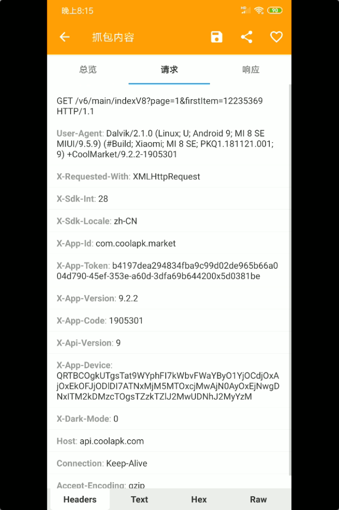
可以看到其中有个请求头 X-App-Token，这就是验证，至于X-App-Device这玩意儿应该是获取你手机信息的，不管它，先看看软件源代码，找到请求方法
1、jeb分析
没加固，好像也没混淆，舒服
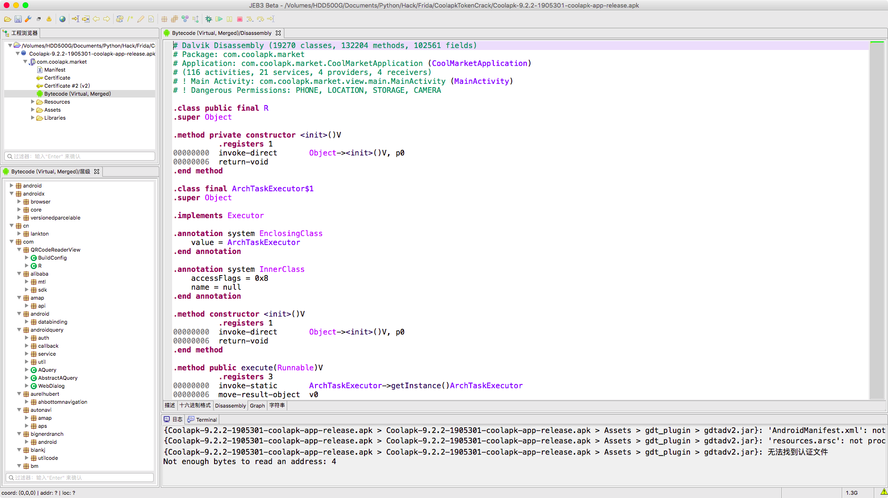
搜索关键字：X-App-Token
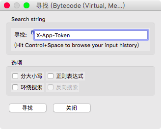
很明显找到了我们要的东西了，(jeb3.0按tab键反编译)
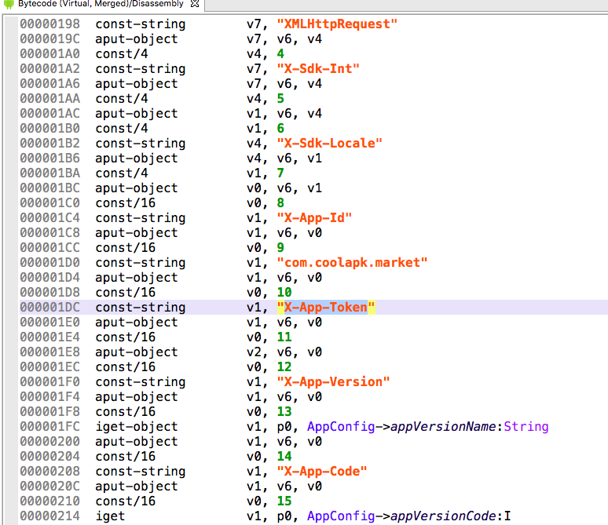
这个 X-App-Token 是变量 v2_1，v2_1是，一个AuthUtils类里的getAS方法返回的
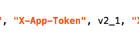
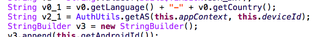
跟进可以发现这是一个native方法，lib是native-lib
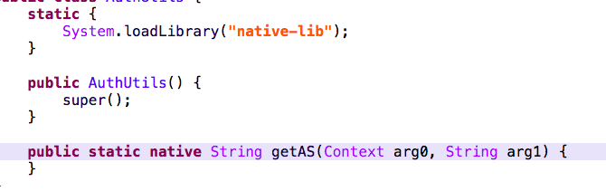
到这里就没法用jeb分析了，我们先看看参数2 deviceId 是个什么玩意儿
可以看到是一个 SystemUtils 类里的 getDeviceID方法返回的，传入一个context参数
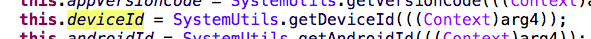
我们去app的application hook这个方法
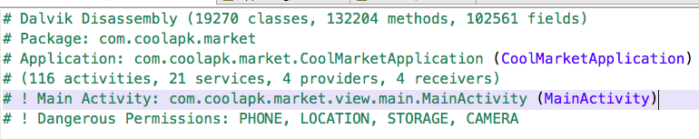
我找到一个代码量最少的方法，这样可以帮助我们不破坏原逻辑的情况下hook
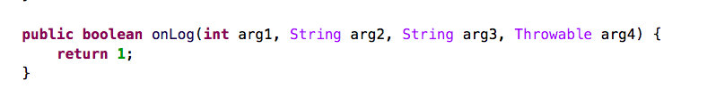
hook的代码很简单1
2
3
4
5
6
7
8
9
10
11
12
13
14Java.perform(function() {
var CoolMarket = Java.use('com.coolapk.market.CoolMarketApplication');
CoolMarket.onLog.implementation = function() {
var deviceId = Java.use('com.coolapk.market.util.SystemUtils').getDeviceId(this);
console.log('Device Id: ', deviceId);
var app_token = Java.use('com.coolapk.market.util.AuthUtils').getAS(this, deviceId);
console.log('App Token: ', app_token);
console.log('----------');
return 1;
}
})
拿到 deviceId 后分析so
ida分析
解压apk拿到 native-lib.so，用ida打开
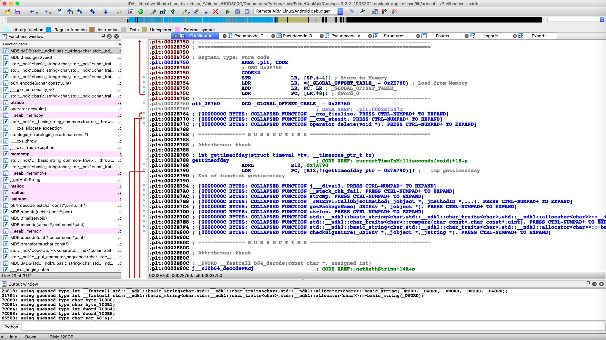
我们已知方法名和参数个数，那么就先搜索方法名
在 Function Window 按 option+t 搜索 getAS，可以看到，毛都没有
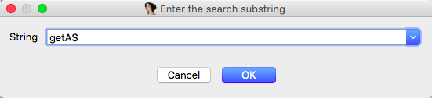
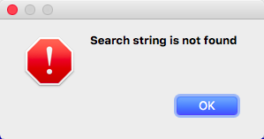
那我们就到 IDA View 里搜索，快捷键一样
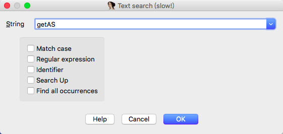
找到了这个，参数是两个，但这个不是方法，没法 F5 反编译

不瞒你们，这个DCB是个什么玩意儿我也不知道.
但是我在 Function Window 瞎翻想找一些我能看得懂的方法名时看到了这个
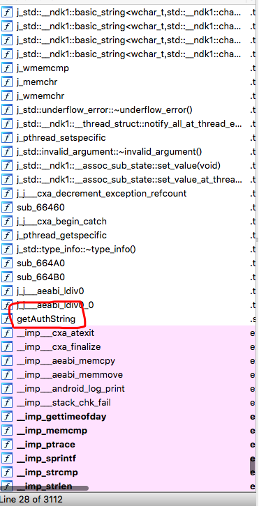
我一看，这个方法好像和 getAS 有点关系就顺手 F5 了
简单看了看里面的代码,我估计我要找的是这个方法，为什么是这个方法而不是其他的
我分析了 X-App-Token 这个验证的组成，它长这样：f2c29a109fde487e9350d3e6b881036a8513efac-09ea-3709-b214-95b366f1a1850x5d024391
我之前就获取到了我的 Device Id，我无意间看到了我的 device id就在里面，然后我把它拆分成了这样：
- f2c29a109fde487e9350d3e6b881036a
- 8513efac-09ea-3709-b214-95b366f1a185
- 0x5d024391
第一项很明显是md5密文，第二部分就是device id，最后是一个十六进制，不知道什么玩意儿，但我在那个 getAuthString 代码里看到了这段
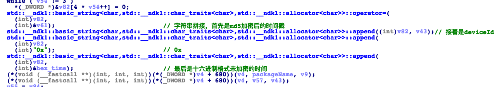
这是一个字符串拼接的过程，其中 v82 是md5密文，也是字符串的头部，后面接着是 v43（device id）、字符串0x、最后是 hex_time (这是我改了后的命名)，所以我就能确定这个方法就是我想要的；
上面说的也就是接下来要分析的，其中那个十六进制的东西就是时间戳，我们只需要分析出md5是怎么来的就行了，我们知道md5是 v61，v61 的加密代码在这
加密的内容是v58，v58是一个经过base64编码后的变量
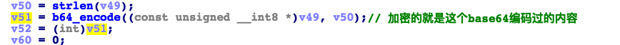
我懒得去看它是什么了，我直接hook了md5加密类，有三个方法，一个是md5(应该是构造方法把)、update、finalize，hook 代码如下1
2
3
4
5
6
7
8
9
10
11
12
13
14
15
16
17
18
19
20
21
22
23
24
25
26
27
28
29
30
31
32
33
34
35
36
37
38
39
40
41
42
43
44
45
46
47
48
49
50
51
52
53
54
55
56
57
58
59
60
61
62
63
64
65
66
67
68
69
70
71
72
73
74
75
76
77
78
79
80
81
82
83
84
85
86
87
88
89
90
91
92
93
94
95
96
97
98
99
100
101
102
103
104
105
// 这里算基址是学的四哥的
var JNI_LOAD_POINTER = Module.getExportByName('libnative-lib.so', 'JNI_OnLoad'); // 首先拿到 JNI_OnLoad方法的地址
// 这里减去的是从so中得到的JNI_OnLoad的地址 0x31A04
var BASE_ADDR = parseInt(JNI_LOAD_POINTER) - parseInt('0x31A04'); // 用程序运行中JNI_OnLoad的绝对地址减去它的相对地址得到基址
// MD5::MD5
Java.perform(function() {
// 然后用基址 + 要hook的方法的相对地址就得到了绝对地址
var hookpointer = '0x' + parseInt(BASE_ADDR + parseInt('0x32168')).toString(16) // 获取要hook方法的地址
var pointer = new NativePointer(hookpointer) // 根据方法地址构建NativePointer
console.log('[MD5::MD5] hook pointer: ', pointer)
var arg0, arg1, arg2, arg3
Interceptor.attach(pointer, {
onEnter: function(args) {
arg0 = args[0]
arg1 = args[1]
console.log('\n')
console.log('=====> [MD5::MD5] -> [方法调用前]')
console.log('参数1: {0} => {1}'.format(arg0, Memory.readCString(arg0))) // Memory.readCString 是读取地址为字符串，类似的还有readUtf8String、readUtf16String等
console.log('参数2: {0} => {1}'.format(arg1, Memory.readCString(arg1)))
console.log('\n')
},
onLeave: function(retval) {
console.log('\n')
console.log('=====> [MD5::MD5] -> [方法调用后]:')
console.log('返回值: ', retval)
console.log('参数1: {0} => {1}'.format(arg0, Memory.readCString(arg0)))
console.log('参数2: {0} => {1}'.format(arg1, Memory.readCString(arg1)))
console.log('\n')
}
}
)
})
// MD5::update
Java.perform(function() {
var hookpointer = '0x' + parseInt(BASE_ADDR + parseInt('0x329AC')).toString(16) // 获取要hook方法的地址
var pointer = new NativePointer(hookpointer) // 根据方法地址构建NativePointer
console.log('[MD5::update] hook pointer: ', pointer)
var arg0, arg1, arg2, arg3
Interceptor.attach(pointer, {
onEnter: function(args) {
arg0 = args[0]
arg1 = args[1]
arg2 = args[2]
console.log('\n')
console.log('=====> [MD5::update] -> [方法调用前]')
console.log('参数1: {0} => {1}'.format(arg0, Memory.readCString(arg0)))
console.log('参数2: {0} => {1}'.format(arg1, Memory.readCString(arg1)))
console.log('参数3: {0} => {1}'.format(arg2, Memory.readCString(arg2)))
console.log('\n')
},
onLeave: function(retval) {
console.log('\n')
console.log('=====> [MD5::update] -> [方法调用后]:')
console.log('返回值: ', retval)
console.log('参数1: {0} => {1}'.format(arg0, Memory.readCString(arg0)))
console.log('参数2: {0} => {1}'.format(arg1, Memory.readCString(arg1)))
console.log('参数3: {0} => {1}'.format(arg2, Memory.readCString(arg2)))
console.log('\n')
}
}
)
})
// MD5::finalize
Java.perform(function() {
var hookpointer = '0x' + parseInt(BASE_ADDR + parseInt('0x321C4')).toString(16) // 获取要hook方法的地址
var pointer = new NativePointer(hookpointer) // 根据方法地址构建NativePointer
console.log('[MD5::finalize] hook pointer: ', pointer)
var arg0, arg1, arg2, arg3
Interceptor.attach(pointer, {
onEnter: function(args) {
arg0 = args[0]
arg1 = args[1]
arg2 = args[2]
arg3 = args[3]
console.log('\n')
console.log('=====> [MD5::finalize] -> [方法调用前]')
console.log('参数1: {0} => {1}'.format(arg0, Memory.readCString(arg0)))
console.log('参数2: {0} => {1}'.format(arg1, Memory.readCString(arg1)))
console.log('参数3: {0} => {1}'.format(arg2, Memory.readCString(arg2)))
console.log('参数4: {0} => {1}'.format(arg3, Memory.readCString(arg3)))
console.log('\n')
},
onLeave: function(retval) {
console.log('\n')
console.log('=====> [MD5::finalize] -> [方法调用后]:')
console.log('返回值: ', retval)
console.log('参数1: {0} => {1}'.format(arg0, Memory.readCString(arg0)))
console.log('参数2: {0} => {1}'.format(arg1, Memory.readCString(arg1)))
console.log('参数3: {0} => {1}'.format(arg2, Memory.readCString(arg2)))
console.log('参数4: {0} => {1}'.format(arg3, Memory.readCString(arg3)))
console.log('\n')
}
}
)
})
运行后得到了那个base64编码过的内容：
dG9rZW46Ly9jb20uY29vbGFway5tYXJrZXQvYzY3ZWY1OTQzNzg0ZDA5NzUwZGNmYmIzMTAyMGYwYWI/MzgyMzIxNWQ5MWQyOWQ5ODg3ZWJjMDVmMGQ3ZmQzMGQkODUxM2VmYWMtMDllYS0zNzA5LWIyMTQtOTViMzY2ZjFhMTg1JmNvbS5jb29sYXBrLm1hcmtldA==
经过解码后：
token://com.coolapk.market/c67ef5943784d09750dcfbb31020f0ab?3823215d91d29d9887ebc05f0d7fd30d$8513efac-09ea-3709-b214-95b366f1a185&com.coolapk.market
在我看到这段代码后
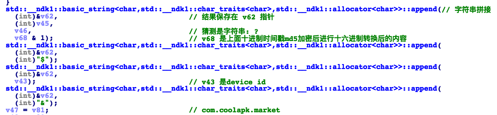
上面解码后的内容可以拆分为：
- token://com.coolapk.market/c67ef5943784d09750dcfbb31020f0ab?
- 3823215d91d29d9887ebc05f0d7fd30d
- $
- 8513efac-09ea-3709-b214-95b366f1a185
- &
- com.coolapk.market
据我分析，只需要的到第二部分的md5加密的来历就行了，继续分析，找到了加密的地方
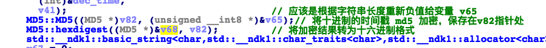
根据这图的画线，可以明确的知道这md5就是时间戳，在我hook的输出中也可以看到这个就是时间戳
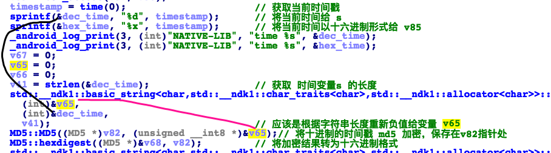
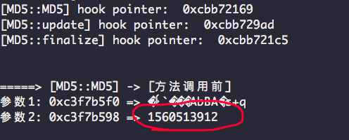
至于 token://com.coolapk.market/c67ef5943784d09750dcfbb31020f0ab? 这个是不变的
结论
token://com.coolapk.market/c67ef5943784d09750dcfbb31020f0ab? + md5加密后的时间戳 + $ + device id + & + com.coolapk.market(包名)，将其md5加密后得到 第一部分
token的来历就是：第一部分 + deivce id + 0x + 十六进制转换后的时间戳
简单的测试代码：1
2
3
4
5
6
7
8
9
10
11
12
13
14
15
16
17
18
19
20
21
22
23
24
25
26
27
28
29
30
31
32
33
34
35
36
37
38
39
40
41
42
43
44
45
46
47
48
49
50
51
52
53import requests
import time
import hashlib
import base64
DEVICE_ID = "8513efac-09ea-3709-b214-95b366f1a185"
def get_app_token():
t = int(time.time())
hex_t = hex(t)
# 时间戳加密
md5_t = hashlib.md5(str(t).encode('utf-8')).hexdigest()
# 不知道什么鬼字符串拼接
a = 'token://com.coolapk.market/c67ef5943784d09750dcfbb31020f0ab?{}${}&com.coolapk.market' \
.format(md5_t, DEVICE_ID)
# 不知道什么鬼字符串拼接 后的字符串再次加密
md5_a = hashlib.md5(base64.b64encode(a.encode('utf-8'))).hexdigest()
token = '{}{}{}'.format(md5_a, DEVICE_ID, hex_t)
print(token)
return token
def request():
url = "https://api.coolapk.com/v6/main/indexV8?page=1"
headers = {
"User-Agent": "Dalvik/2.1.0 (Linux; U; Android 9; MI 8 SE MIUI/9.5.9) (#Build; Xiaomi; MI 8 SE; PKQ1.181121.001; 9) +CoolMarket/9.2.2-1905301"
}
headers = {
"User-Agent": "Dalvik/2.1.0 (Linux; U; Android 9; MI 8 SE MIUI/9.5.9) (#Build; Xiaomi; MI 8 SE; PKQ1.181121.001; 9) +CoolMarket/9.2.2-1905301",
"X-App-Id": "com.coolapk.market",
"X-Requested-With": "XMLHttpRequest",
"X-Sdk-Int": "28",
"X-Sdk-Locale": "zh-CN",
"X-Api-Version": "9",
"X-App-Version": "9.2.2",
"X-App-Code": "1903501",
"X-App-Device": "QRTBCOgkUTgsTat9WYphFI7kWbvFWaYByO1YjOCdjOxAjOxEkOFJjODlDI7ATNxMjM5MTOxcjMwAjN0AyOxEjNwgDNxITM2kDMzcTOgsTZzkTZlJ2MwUDNhJ2MyYzM",
"Host": "api.coolapk.com",
"X-Dark-Mode": "0",
"X-App-Token": get_app_token(),
}
resp = requests.get(url, headers=headers)
print(resp.text)
if __name__ == '__main__':
request()
最后
代码啥的都提交到Github了，CoolapkTokenCrack